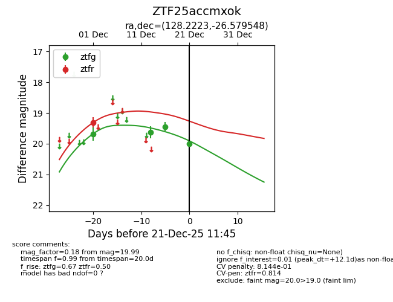
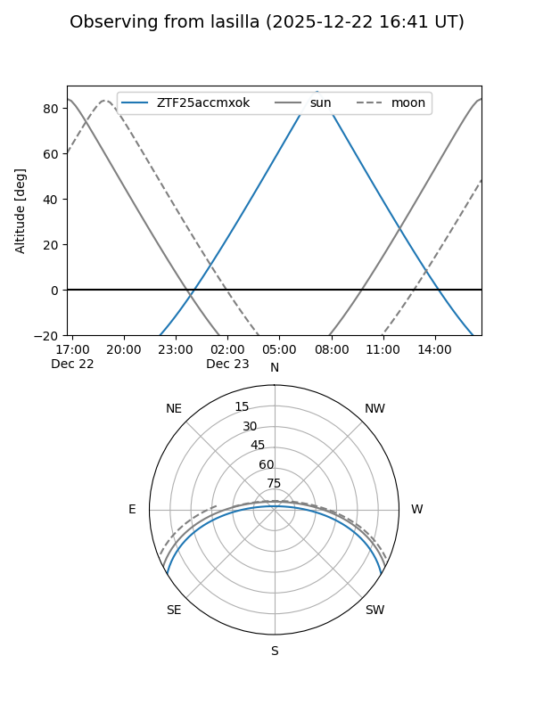
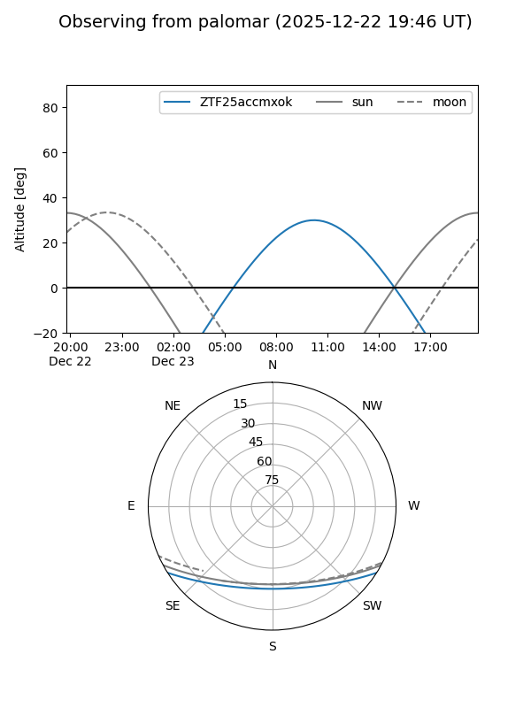
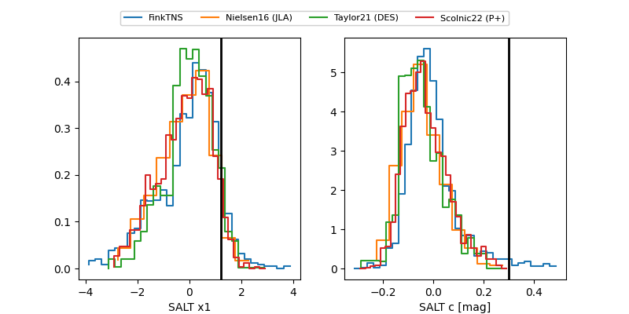

ZTF25accmxok
Target ZTF25accmxok at 2025-12-21 11:48
Aliases and brokers:
FINK: fink-portal.org/ZTF25accmxok
Lasair: lasair-ztf.lsst.ac.uk/objects/ZTF25accmxok
ALeRCE: alerce.online/object/ZTF25accmxok
alt names
ZTF25accmxok (ztf,fink_ztf)
Coordinates:
equatorial (ra, dec) = 128.2223,-26.57955
equatorial (HMS+DMS) = 08:32:53.35,-26:34:46.37
galactic (l, b) = (248.2658,+7.86906)
Flags:
likely cv
Photometry:
last ztfg=19.99, ztfr=19.31
4 ztfg, 1 ztfr detections
Lightcurve

Visibility


Additional plots
